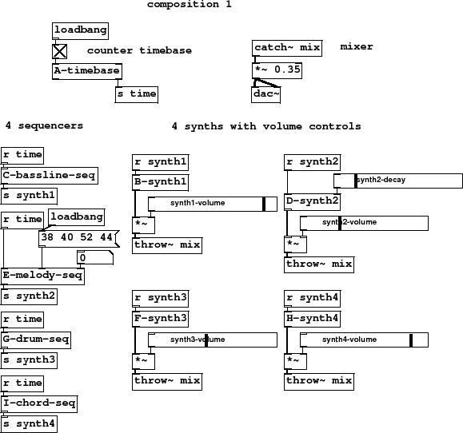

Subsections
Figure 14 summary
- mixer
- counter timebase
- 4 sequencers
- 4 synths with volume controls
To mix two or more parts we send them to a bus with
another [throw~ mix]. Unlike [send~] many different [throw~]
units can talk to a single [catch~]. Before going to the
bus, each channel in our mixer passes through another multiply
set by a corresponding GUI fader object. The mix of audio is collected by
[catch~ mix] and scaled to make it a little quieter.
Here is our final composition with 4 separate synthesisers and 4 sequencers, one for each part.
It plays a pattern 32 beats long with a bass line, noise drums, arpeggio and chords.
The timebase is controlled by a toggle switch so it can be started from the main patch.
Figure 14:
composition1
|

|
Z-composition1-play.pd
Z-composition1-play.ogg
Andy Farnell
http://obiwannabe.co.uk/